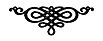

Her birimiz, tek bir kişi değil, art arda ortaya çıkan pek çok kişiyiz. Ve birbirinin içinden doğarak sırayla ortaya çıkan bu kişilikler, bizlere çoğu zaman aralarındaki en garip, en şaşırtıcı tezatları sunarlar.
JOSÉ ENRIQUE RODÔ Motivos de Proteo (Proteus'un Güdüleri)